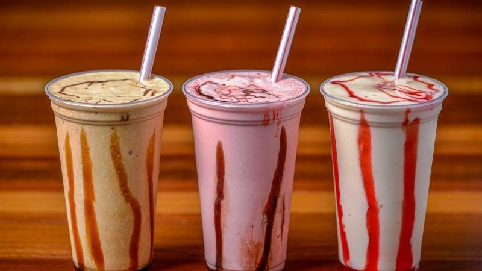

O Milk Share de chocolate é uma opção saborosa para quem gosta de um toque doce no leite. Tem um gosto suave e agradável, com uma textura cremosa. A mistura é bem equilibrada, não sendo muito doce nem muito enjoativa. É uma boa escolha para um lanche rápido ou para adicionar um pouco de variedade à sua rotina. Se você gosta de chocolate e de bebidas lácteas, é uma escolha que vale a pena experimentar.
O Milk Share de morango oferece um sabor doce e frutado que é bem popular. A combinação do leite com o sabor de morango é geralmente leve e refrescante, com uma nota doce que não é excessiva. A textura costuma ser cremosa, o que complementa bem o sabor do morango. É uma boa opção para quem procura algo doce e agradável para variar no dia a dia. Se você gosta de morango e de bebidas lácteas, pode achar essa mistura uma ótima escolha.
O Milk Share de baunilha é uma opção clássica e versátil. Seu sabor é suave e cremoso, com uma nota doce e delicada de baunilha que não é overpowering. A mistura tende a ter uma textura rica e aveludada, tornando-a uma escolha agradável para quem prefere um gosto mais sutil. É ótimo para quem busca um sabor tradicional e confortável, ideal tanto para o consumo direto quanto para misturas em receitas. Se você é fã de baunilha, é uma opção confiável e saborosa.
